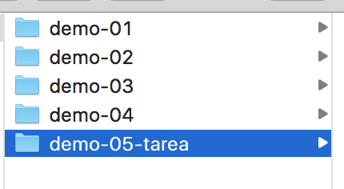
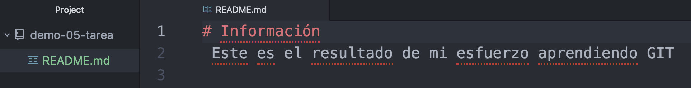
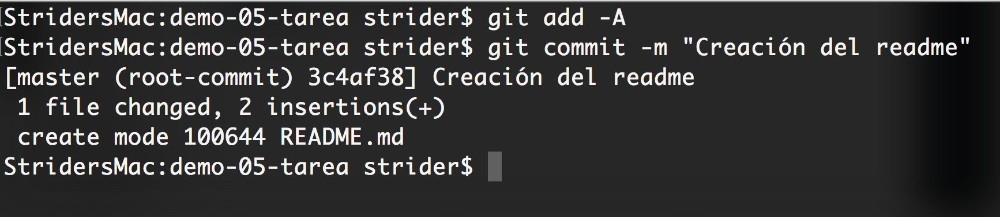
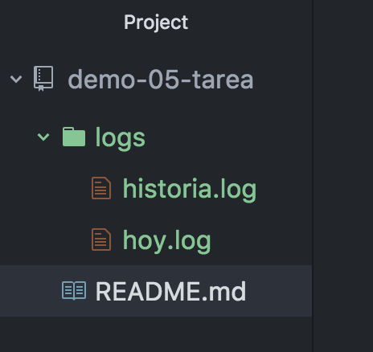
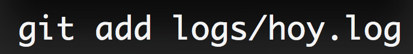
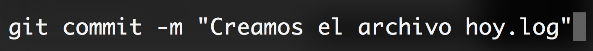
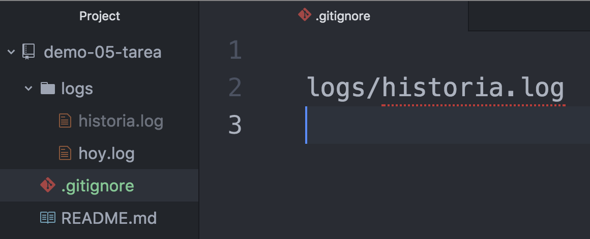
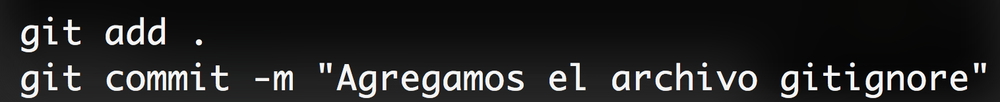
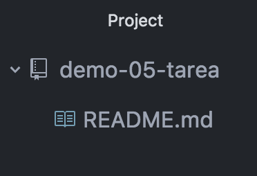
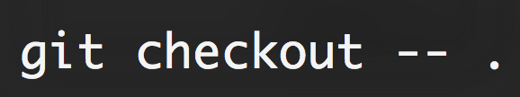

Tarea práctica #1 Fundamento de Git
Siga las instrucciones indicadas, si no recuerda una instrucción presione el botón de Ayuda
# 1
Cree una carpeta junto a a los demás ejercicios del proyecto llamada
demo-05-tarea

# 2
Dentro de esa carpeta, inicialice el proyecto de git
# 3
Dentro del repositorio cree un archivo llamado README.md, ingrese el siguiente contenido:
# Información
Este es el resultado de mi esfuerzo aprendiendo GIT

# 4
- Agregue el README.md al stage o escenario
- Realice el primer commit con el mensaje Creación del readme
git add -A
git commit -m "Creación del readme"

# 5
- Cree una carpeta dentro del proyecto llamada logs
- Dentro de la carpeta logs, cree un archivo llamado hoy.log
- Crear otro archivo llamado historia.log

# 6
Agregue únicamente el archivo hoy.log al stage

# 7
Realice el primer commit con el archivo hoy.log, y en el mensaje coloque "Creamos el archivo hoy.log"

# 8
- Vamos a crear ahora el archivo .gitignore
- Ignoremos completamente el archivo historia.log

# 9
- Agregue al stage el archivo .gitignore
- Realice un commit unicamente con el archivo .gitignore

# 10
- Borre la carpeta LOGS
- Borre el archivo index.html
- Borre el archivo .gitignore
- El único archivo que debe de quedar, es el README.md

# 11
Reconstruir todo lo borrado con un único comando. (El archivo historia.log debe de aparecer)

# 12
¿Por qué el archivo historia.log no apareció?
Debe de ser capaz de analizar el por qué
Porque en ningún momento le pedimos a GIT que estuviera pendiente de sus cambios realizados al archivo historia.log
Si usted tiene ese archivo, es porque lo agrego al stage y realizó al menos un commit que tenía ese archivo.
Excelente, llego al final del ejercicio